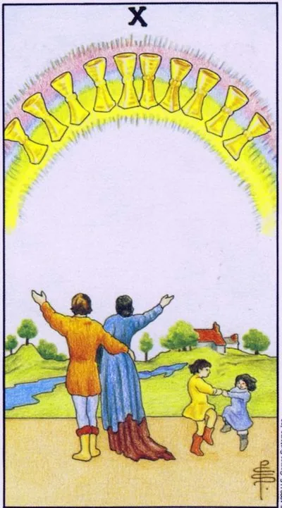

Minor Arcana · Cups
XTen of Cups
A rainbow of ten cups above a family: peace in the home, love without conditions, happiness without proof.
Archetype and core meaning
Under a rainbow of ten shining bowls, the couple looks up at the green hills, the children dance next to each other, and this is the archetype of "living happily ever after": not the passion of meeting each other, but the quiet, lasting happiness of belonging, where everyone is seen and loved whole.
The cups are the top of your suit: emotional fulfillment, peace in the home, intergenerational unity. It promises a happy resolution to a long story, and reminds you that wealth is measured by the number of people you care about. It's also about peace with yourself: when internal conflict is settled, the house is no longer a battlefield.
Daily life
A home day that you remember for years: a shared table, guests without tension, children playing, adults laughing. Family council is now a success — big decisions are made easily and coherently. Call your family, make peace with your family, start the tradition of Sunday breakfast.
Work and career
Harmonious phase: the team is in no business, it's not just money, it's successful family business and people close to you, it's a good time to ask for flexible schedules for family, which is a request that's now met with understanding, remember: career is part of life, not a replacement for it.
Relationships
One of the great cards of marriage is love that has been tested in life, decision about children, moving into a common home, reconciliation of families. Single people promise to meet a level of seriousness — not a spark for the evening, but a potential family. Existing unions reach a new level of trust.
Health
The psyche rests fundamentally: the feeling of the back reduces stress hormones, deep sleep, chronic sores subside, health is strengthened by simple things — walking together, eating at home, laughing. The card is favorable for planning children and restorative programs with the support of loved ones.
Spiritual meaning
The prototype of the heavenly city and the completeness of the element Water: ten vessels full and standing as the arch of the world. The card is attracted to the consecration of the house, the rituals of family unity and reconciliation of birth. The supreme magic of Cups is not love spells, but the ability to create a space where people are safe to love.
The rainbow has faded: the discord in the house, the war of values and the facade of prosperity, for which everyone is tired.
Archetype and core meaning
The arch crumbles: the same family, the same landscape, but an invisible wall grew between loved ones, the Straight Ten showed happiness as fact, inverted as scenery: photos collect likes, and behind the scenes everyone lives in his room and his silence.
The card represents the disharmony of the house: the conflicts of generations, the divorce of face-saving, the struggle over whose truth becomes the family ideology. Sometimes softer are the different values that once seemed compatible. The old way of life no longer works; it's not necessarily a breakup, but a reassembly is necessary.
Daily life
The background rings: only household conversations, dishes beat more often than usual, everyone avoids the common kitchen. Don't save the facade at all costs, have an honest family conversation without accusations, starting with "I", not "you." If you live with your parents, check the boundaries: part of the wars goes beyond the territory.
Work and career
The home crisis is affecting work: concentration is falling, hospitalization is increasing, decisions are made irritated, there may be an office version of the same theme, where the team is divided into camps under the slogans of shared values. Don't make sudden career moves on emotion: stabilize the rear first.
Relationships
Storm: quarrels over trifles, cooling off, arguments about children and money, the question of "save the union." Look beyond the claims - they usually have one unexplained question: "Are you with me at all or near?" His answer is more important than the outcome of any quarrel.
Health
Family conflict hits everyone, including children: headaches, chronic exacerbations, adult insomnia; children are more harmed by silent war than honest divorce; take care of neutral territory and adult supports — therapist, friends, sports — and don't drag it all alone.
Spiritual meaning
A broken hearth that needs relaying: the old family ritual has served its purpose, practices like cleaning the home, revising birth scenarios ("everyone in our family suffers"), consciously assembling new rules. The gift of the card is great: the chance to build a house according to your own design, not your own.
🌿 How the school reads this rank
The main idea
The maximum emotion available. It's not the promise of an eternal idyll, but the emotional ceiling of a particular situation.
How it manifests
In relationships, there's a shared joy that you want to share, in other areas, there's a moment when emotion peaked, and it's important to remember that today's emotional maximum doesn't guarantee eternal state.
The shadow side
Even a negative ten means the limit of experience: it will not get worse.
Keywords
maximum emotions · joy · idyll · limit · full bowl
📜 In detail — from the rank lecture
Essence of the card
The content is shared joy: nine people are happy themselves, here "ice cream is twice as tasty in company."
Upright position
- "That's the maximum emotion you can feel right now" -- "You can't put syrup in a bowl full to the top." The man who's closed also gives you a straight dozen cups -- that's HIS maximum, not necessarily yours.
- Relationships: not the “perfect family life”, but the current ceiling of emotions in this situation; idyll is not eternal – emotions fade over time, then there will be something new (on the question of dismissal – maximum joy from leaving, but not a guarantee of a happy turn of life).
- Exit to the page of cups: learns to understand, choose and share emotions, manage them a little.
Negative meaning
• maximum negative emotions in this situation - and "no more will be", which in itself is comforting.
School emphases and distinctive points
- His symbolic support: Kabbalah (Sephiroth, Laitman); the Bible is the end of the flood at Ararat, the rainbow as a sign of joy (with the reservation: the rainbow is NOT a symbol of LGBT); St. Sebastian; Irida in the roll call with Moderation; pastoral and idyll; Victorian England and the theme of inheritance.
- Modern images: bread for 10 euros against the cake "Napoleon", buffet "all inclusive", car dealership, closet from IKEA, Courchevel.
- Practice: add to the conclusions “but it is inaccurate”; begin to work with straight and inverted cards; tarologist can not include evaluative emotions (anecdote about Uncle Fedor in a Buddhist monastery – rejection of evaluative); distinguish who the card is about “you or your enemies” (the plot “you will destroy the great state”).
- Examples from practice: 9 + 10 pentacles about salary; a gunshot on a dozen swords and a “knife wound to the heart” on an inverted three; dismissal with a straight dozen cups.
Keywords
shared joy; idyll-pastoral; maximum emotions; "you can't add to the full bowl"; rainbow after rain.